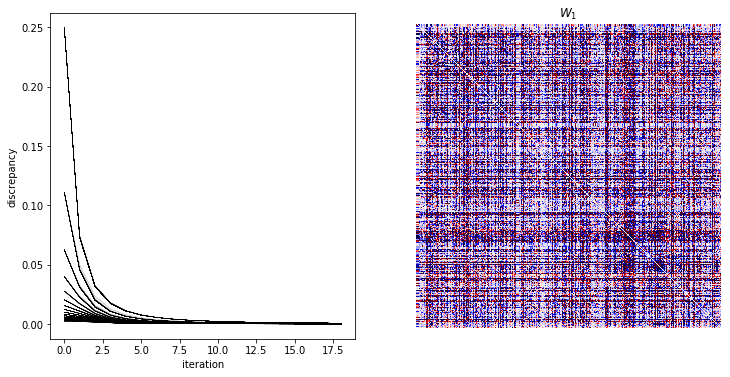

Multiple sequence alignment¶
In [1]:
import fem
%matplotlib inline
import matplotlib.pyplot as plt
import numpy as np
import sys, os, time, pickle
sys.path.append('../../scripts')
data_dir = '../../../data/msa'
In [2]:
from parse_pfam import parse_pfam
pf, pf_info, pdbmap = parse_pfam(data_dir=data_dir)
In [3]:
pf[:10]
Out[3]:
array(['PF10417.8', 'PF12574.7', 'PF09847.8', 'PF00244.19', 'PF16998.4',
'PF00389.29', 'PF02826.18', 'PF00198.22', 'PF16078.4',
'PF04029.13'], dtype='|S10')
In [4]:
pf_info.head()
Out[4]:
| i | min_m | max_m | res | seq | |
|---|---|---|---|---|---|
| PF10417.8 | 0 | 2 | 21 | 109 | 5754 |
| PF12574.7 | 1 | 1 | 6 | 325 | 7 |
| PF00244.19 | 3 | 2 | 22 | 874 | 3543 |
| PF00389.29 | 5 | 2 | 22 | 1437 | 19205 |
| PF02826.18 | 6 | 1 | 22 | 1143 | 23448 |
In [5]:
pdbmap.head()
Out[5]:
| chain | ? | name | pf | id | res | |
|---|---|---|---|---|---|---|
| pdbid | ||||||
| 3H3M | B | nan | FliT | PF05400 | A0A0H3LVQ9 | 34-106 |
| 3H3M | A | nan | FliT | PF05400 | A0A0H3LVQ9 | 34-106 |
| 3NKZ | C | nan | FliT | PF05400 | A1JSR8 | 21-92 |
| 3NKZ | B | nan | FliT | PF05400 | A1JSR8 | 21-94 |
| 3NKZ | D | nan | FliT | PF05400 | A1JSR8 | 21-93 |
In [6]:
# # random pdb
# pdb = pdbmap.sample()
# pfam = pf_info[pf_info.index.str.contains(pdb['pf'][0])]
# Cas 9 family
pfam = pf_info[pf_info.index.str.contains('PF16592')]
pfam
Out[6]:
| i | min_m | max_m | res | seq | |
|---|---|---|---|---|---|
| PF16592.4 | 1486 | 2 | 21 | 1079 | 146 |
In [7]:
pf_dir = os.path.join(data_dir, 'Pfam', pfam.index[0])
msa = np.load(os.path.join(pf_dir, 'msa.npy'))
In [8]:
# number of AAs that occur at each residue
m = np.array([len(np.unique(s)) for s in msa])
# filter out residues that less than 3 AAs
active_residues = m > 1
msa = msa[active_residues]
# data dimensions
n, l = msa.shape
print 'sequence length (n): %i, number of sequences (l): %i' % (n, l)
# elements of data matrix
print 'AAs: %s' % (np.unique(msa),)
sequence length (n): 1079, number of sequences (l): 146
AAs: ['-' 'a' 'c' 'd' 'e' 'f' 'g' 'h' 'i' 'k' 'l' 'm' 'n' 'p' 'q' 'r' 's' 't'
'v' 'w' 'y']
In [9]:
w_file = os.path.join(pf_dir, 'w.npy')
d_file = os.path.join(pf_dir, 'd.pkl')
if os.path.exists(w_file) and os.path.exists(d_file):
w = np.load(w_file)
with open(d_file, 'rb') as f:
d = pickle.load(f)
else:
start = time.time()
w, d = fem.discrete.fit.fit(msa, degs=[1], iters=10)
end = time.time()
w = w[1]
np.save(w_file, w)
with open(d_file, 'wb') as f:
pickle.dump(d, f)
print '%02f seconds' % (end-start,)
In [10]:
fig, ax = plt.subplots(1, 2, figsize=(12, 6))
for di in d:
ax[0].plot(di, 'k-', lw=0.1)
ax[0].set_xlabel('iteration')
ax[0].set_ylabel('discrepancy')
scale = 1e-2 * np.abs(w).max()
ax[1].imshow(w, aspect='equal', cmap=plt.cm.seismic, vmin=-scale, vmax=scale)
ax[1].axis('off')
ax[1].set_title('$W_1$')
plt.savefig(os.path.join(pf_dir, 'fit.png'))
plt.show()

In [11]:
pdbmap[pdbmap['pf'].str.contains('PF16592')]
Out[11]:
| chain | ? | name | pf | id | res | |
|---|---|---|---|---|---|---|
| pdbid | ||||||
| 5FQ5 | B | nan | Cas9_REC | PF16592 | Q99ZW2 | 181-712 |
| 5FW3 | B | nan | Cas9_REC | PF16592 | Q99ZW2 | 181-712 |
| 4CMP | A | nan | Cas9_REC | PF16592 | Q99ZW2 | 181-712 |
| 4UN3 | B | nan | Cas9_REC | PF16592 | Q99ZW2 | 181-710 |
| 5B2R | B | nan | Cas9_REC | PF16592 | Q99ZW2 | 184-712 |
| 4ZT9 | C | nan | Cas9_REC | PF16592 | Q99ZW2 | 181-712 |
| 4OO8 | D | nan | Cas9_REC | PF16592 | Q99ZW2 | 181-712 |
| 5F9R | B | nan | Cas9_REC | PF16592 | Q99ZW2 | 181-712 |
| 4ZT0 | A | nan | Cas9_REC | PF16592 | Q99ZW2 | 181-712 |
| 4OO8 | A | nan | Cas9_REC | PF16592 | Q99ZW2 | 181-712 |
| 5FW2 | B | nan | Cas9_REC | PF16592 | Q99ZW2 | 181-712 |
| 5FW1 | B | nan | Cas9_REC | PF16592 | Q99ZW2 | 181-710 |
| 4CMQ | A | nan | Cas9_REC | PF16592 | Q99ZW2 | 181-712 |
| 4CMQ | B | nan | Cas9_REC | PF16592 | Q99ZW2 | 181-712 |
| 5B2S | B | nan | Cas9_REC | PF16592 | Q99ZW2 | 184-712 |
| 4CMP | B | nan | Cas9_REC | PF16592 | Q99ZW2 | 181-712 |
| 5B2T | B | nan | Cas9_REC | PF16592 | Q99ZW2 | 181-712 |
| 4UN5 | B | nan | Cas9_REC | PF16592 | Q99ZW2 | 181-712 |
| 4ZT9 | A | nan | Cas9_REC | PF16592 | Q99ZW2 | 181-710 |
| 4UN4 | B | nan | Cas9_REC | PF16592 | Q99ZW2 | 181-712 |
| 4ZT0 | C | nan | Cas9_REC | PF16592 | Q99ZW2 | 181-712 |
| 5CZZ | A | nan | Cas9_REC | PF16592 | J7RUA5 | 224-428 |
| 5AXW | A | nan | Cas9_REC | PF16592 | J7RUA5 | 224-428 |
In [12]:
import pymol
In [20]:
dir(pymol)
? pymol.cmd.save
In [14]:
pymol.cmd.set('grid_mode', 1)
# gird_slot
PyMOL not running, entering library mode (experimental)
In [15]:
pymol.cmd.loadall(os.path.join(pf_dir, '*.cif'))
In [16]:
# pymol.cmd.png(filename = os.path.join(pf_dir, 'all.png'))
# pymol.cmd.save(filename = os.path.join(pf_dir, 'all.png'))
Out[16]:
1
In [17]:
def plot_pdb(pdbid, pf_dir):
pdbid = pdbid.lower()
pymol.cmd.fetch(pdbid, path=pf_dir)
pymol.cmd.load(filename = os.path.join(pf_dir, pdbid+'.cif'))
pymol.cmd.png(filename = os.path.join(pf_dir, pdbid+'.png'))
pymol.cmd.extend('plot_pdb', plot_pdb)
# for pdbid in pdbmap[pdbmap['pf'].str.contains('PF16592')].index:
# plot_pdb(pdbid, pf_dir)
Out[17]:
<function __main__.plot_pdb>
In [18]:
# pymol -qcr <script.py>
# ftp://ftp.ebi.ac.uk/pub/databases/Pfam/releases/Pfam31.0/
In [19]:
# import Bio
# from Bio import SeqIO
# msa = Bio.SeqIO.parse(os.path.join(data_dir, 'PF16592_ncbi.txt'), 'fasta')
# msa = np.array([np.array(s.seq) for s in msa]).T